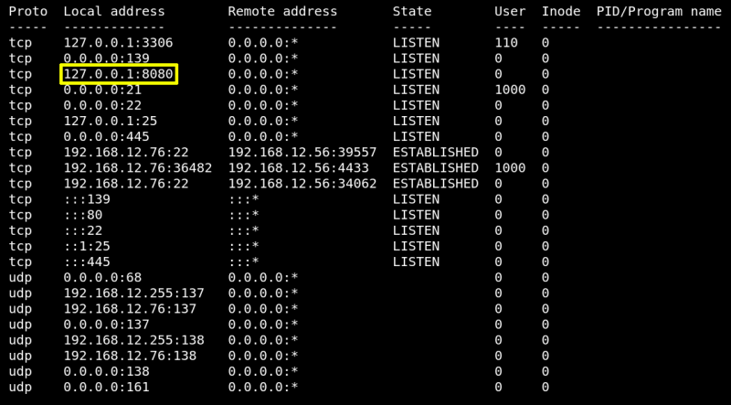

4.1 Netstat
Check for the IP address and ports the target machine is listening on.
On the previous “meterpreter” type the following command.
meterpreter > netstat
Output:

You'll see that a “Web Service (8080)” is allowed for localhost only.
Index
 Index
Index